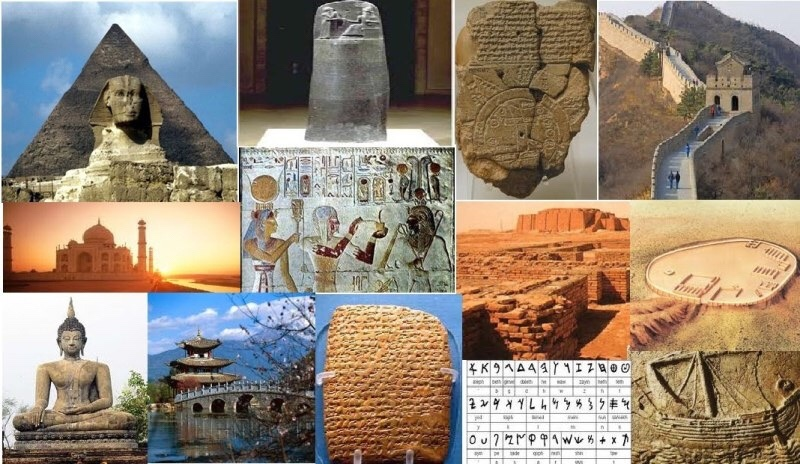

La civilización occidental se formó gracias al aporte de dos grandes culturas: la Antigua Grecia y Roma. En Grecia surgieron importantes ideas que aún influyen en nuestra vida diaria. Por ejemplo, la democracia ateniense permitió que los ciudadanos participaran en las decisiones políticas, un modelo que hoy se refleja en las elecciones y gobiernos democráticos. Además, la filosofía griega buscó explicar el mundo usando la razón y no solo los mitos.
El estudio de la historia de las civilizaciones permite comprender cómo el pasado influye en el presente. Los aportes de Grecia y Roma, la importancia de la religión en la Edad Media, los encuentros culturales en Oriente Medio y los cambios de la modernidad han construido el mundo actual.
Roma, en cambio, se destacó por su capacidad de organización. Creó un sistema de leyes conocido como derecho romano, que sirvió de base para muchas leyes actuales. Un ejemplo de esto es la idea de que todas las personas deben ser juzgadas bajo las mismas normas. También construyó caminos, acueductos y ciudades, facilitando el comercio y la comunicación. En este contexto se expandió el cristianismo, religión que influyó en los valores morales, la educación y la cultura europea durante siglos.
Desarrollo de la democracia, la filosofía y el pensamiento racional, dejando atrás los mitos.
Gran organización política y social, expansión territorial y unificación de pueblos.
Derecho romano como base de las leyes actuales e infraestructura como caminos y acueductos.
Conservación del conocimiento clásico y fortalecimiento del cristianismo.
Expansión del cristianismo e influencia en la moral, cultura y organización social.
1️⃣ Grecia aportó la democracia.
2️⃣ Roma no influyó en las leyes actuales.
3️⃣ La filosofía griega usaba la razón.
Durante la Edad Media, la religión fue el eje principal de la sociedad. En Europa, el cristianismo guiaba la forma de pensar y de vivir de las personas. La Iglesia controlaba la educación y fundó monasterios donde se copiaban libros antiguos, evitando que se perdiera el conocimiento. Por ejemplo, los monjes enseñaban a leer y escribir y preservaban textos de la antigüedad.
Los monasterios fueron centros de conocimiento donde los monjes copiaban manuscritos antiguos, preservando textos de la cultura griega y romana. Gracias a este trabajo, gran parte del saber antiguo no se perdió. Además, los monasterios funcionaban como escuelas y hospitales, ayudando a la población.
El islam, que se expandió rápidamente, aportó grandes avances científicos. Los musulmanes desarrollaron el álgebra, mejoraron la medicina y tradujeron textos griegos al árabe. Un ejemplo es el uso de hospitales y medicamentos avanzados para la época. El judaísmo, aunque sufrió persecuciones, mantuvo su identidad religiosa y cultural. A pesar de conflictos como las cruzadas, hubo intercambios culturales que permitieron compartir conocimientos entre distintas civilizaciones.
Los monjes copiaban manuscritos antiguos para que el saber no se perdiera.
Se convirtieron en los principales centros de aprendizaje y conservación del conocimiento. En una época donde las guerras y la inestabilidad política amenazaban constantemente la transmisión de la sabiduría, los monasterios ofrecían un santuario donde se copiaban y preservaban manuscritos antiguos.
Se desarrollaron el álgebra, la medicina y los hospitales.
El mundo islámico no solo preservó el conocimiento de la antigüedad, sino que también lo expandió y desarrolló nuevas ideas que influirían en el Renacimiento europeo. La ciencia islámica es un testimonio del ingenio humano y su capacidad para avanzar en el conocimiento a través de la colaboración y la curiosidad intelectual. La relación entre la ciencia y la religión en el islam también jugó un papel importante, ya que el Corán se interpretó como una invitación a la reflexión y el entendimiento.
El conocimiento pasó del griego al árabe y luego al latín, permitiendo que obras clásicas llegaran a Europa.
El movimiento de traducción greco-árabe fue un esfuerzo sostenido, bien financiado y de grandes proporciones responsable de la traducción de un volumen significativo de textos seculares griegos al árabe. El movimiento de traducción tuvo lugar en Bagdad, desde mediados del siglo VIII hasta finales del siglo X.
A pesar de persecuciones, las comunidades judías preservaron tradiciones y saberes.
Hoy día, la historia del pueblo judío continúa, con Israel como un estado moderno y vibrante, y comunidades judías floreciendo en todo el mundo. A pesar de los desafíos, el pueblo judío ha mantenido su identidad y su fe a lo largo de miles de años. La relación con la Tierra Prometida sigue siendo central en la identidad judía, y la diáspora continúa jugando un papel vital en la preservación de las tradiciones y valores judíos. La historia del pueblo judío es una historia de resistencia, supervivencia y renovación constante, que sigue inspirando a generaciones alrededor del mundo. La capacidad del pueblo judío para adaptarse y perseverar frente a la adversidad es un testimonio de su profunda fe y compromiso con su herencia y sus valores.
Cristianos, judíos y musulmanes convivieron y compartieron saberes en algunas ciudades.
La convivencia de cristianos, judíos y musulmanes en la Península Ibérica, conocida como la "España de las tres culturas", fue un período de intenso intercambio cultural y científico, especialmente en lugares como Toledo y Córdoba. Entre los siglos VIII y XV, la colaboración en literatura, medicina, arquitectura y filosofía permitió traducir obras clásicas del griego al árabe y al latín, enriqueciendo el conocimiento europeo. Aunque no siempre fue pacífica, esta interacción dejó un legado imborrable en la lengua, música y arte del país.
1️⃣ La religión fue central en la Edad Media.
2️⃣ Los monasterios preservaron libros.
3️⃣ No hubo intercambio cultural.
Oriente Medio es considerado una de las regiones más importantes de la historia porque allí nacieron el judaísmo, el cristianismo y el islam. Ciudades como Jerusalén son sagradas para estas tres religiones. Esta región fue un punto clave del comercio entre Asia, África y Europa, lo que permitió el intercambio de productos como especias, telas y conocimientos.
A lo largo del tiempo, Oriente Medio ha vivido conflictos religiosos y políticos, pero también momentos de convivencia. Por ejemplo, en algunas ciudades musulmanas convivieron cristianos, judíos y musulmanes, compartiendo espacios de trabajo y estudio. Estas experiencias muestran la importancia del respeto y la tolerancia entre culturas diferentes.
Gracias a este intercambio comercial, se difundieron productos, ideas y conocimientos. En algunos periodos históricos, distintas religiones convivieron pacíficamente, compartiendo espacios de trabajo y estudio. Estos ejemplos demuestran la importancia del diálogo y la tolerancia entre culturas.
1️⃣ Allí nacieron tres religiones.
2️⃣ Jerusalén es sagrada para una sola religión.
3️⃣ Fue zona clave de comercio.
La Edad Moderna marcó un cambio profundo en la forma de pensar. El Renacimiento impulsó el interés por la ciencia y el arte, con personajes como Leonardo da Vinci, que combinó arte e investigación científica. La Reforma religiosa cuestionó el poder de la Iglesia y permitió que surgieran nuevas iglesias cristianas.
La Reforma religiosa cuestionó la autoridad de la Iglesia católica y dio origen a nuevas iglesias cristianas, cambiando el mapa religioso de Europa. Estos procesos generaron conflictos, pero también fomentaron la libertad de pensamiento.
Más adelante, la Revolución Industrial transformó la vida cotidiana. Por ejemplo, las personas dejaron el campo para trabajar en fábricas, se crearon máquinas como la máquina de vapor y aumentó la producción de bienes. Estos cambios provocaron el crecimiento de las ciudades y el desarrollo de nuevas clases sociales, sentando las bases del mundo moderno.
Estos cambios dieron origen al mundo moderno y sentaron las bases de la sociedad contemporánea actual.
Es una etapa histórica caracterizada por grandes cambios en la forma de pensar, producir y organizar la sociedad.
1️⃣ El Renacimiento impulsó la ciencia.
2️⃣ La Revolución Industrial no cambió la sociedad.
3️⃣ Surgieron nuevas clases sociales.
En la actualidad vivimos en un mundo globalizado donde personas de diferentes culturas y religiones conviven constantemente. Por ejemplo, en una misma ciudad pueden existir iglesias, mezquitas y sinagogas. Esto hace necesario el respeto, el diálogo y la tolerancia.
Los derechos humanos buscan garantizar la igualdad entre las personas, sin importar su religión, cultura o género. Un ejemplo es el derecho a la educación y a la libertad de expresión. Conocer la historia de las civilizaciones nos ayuda a comprender por qué estos valores son tan importantes hoy en día y a evitar errores del pasado.
Para vivir en un mundo tan variado, necesitamos practicar la convivencia pacífica, que consiste en respetar a los demás y aceptar que no todos somos iguales. Esto se ve en situaciones simples, como compartir el aula con compañeros que hablan otro idioma, practican otra religión o tienen costumbres diferentes. Cuando dialogamos, escuchamos y tratamos con respeto, logramos una convivencia sana que mejora la vida en comunidad y evita conflictos. Así, la diversidad se convierte en una riqueza y no en un problema.
Vivimos en un mundo globalizado y diverso donde el respeto, la tolerancia y los derechos humanos son fundamentales para la convivencia.
1️⃣ Vivimos en un mundo diverso.
2️⃣ El respeto es innecesario hoy.
3️⃣ Los derechos humanos buscan igualdad.